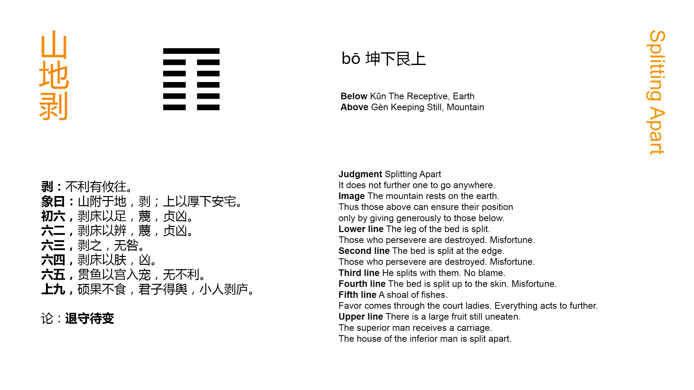

Chinese: 剥 ䷖ bō

Bō ䷖ indicates that (in the state which it symbolises) it will not be advantageous to make a movement in any direction whatever.
1. The first SIX, divided, shows one overturning the couch by injuring its legs. (The injury will go on to) the destruction of (all) firm correctness, and there will be evil.
䷖ changing to ䷚
Matching Line 1 in Adjacent Hexagram: ䷗
2. The second SIX, divided, shows one overthrowing the couch by injuring its frame. (The injury will go on to) the destruction of (all) firm correctness, and there will be evil.
䷖ changing to ䷃
Matching Line 2 in Adjacent Hexagram: ䷗
3. The third SIX, divided, shows its subject among the overthrowers; but there will be no error.
䷖ changing to ䷳
Matching Line 3 in Adjacent Hexagram: ䷗
4. The fourth SIX, divided, shows its subject having overthrown the couch, and (going to injure) the skin (of him who lies on it). There will be evil.
䷖ changing to ䷢
Matching Line 4 in Adjacent Hexagram: ䷗
5. The fifth SIX, divided, shows (its subject leading on the others like) a string of fishes, and (obtaining for them) the favour that lights on the inmates of the palace. There will be advantage in every way.
䷖ changing to ䷓
Matching Line 5 in Adjacent Hexagram: ䷗
6. The topmost NINE, undivided, shows its subject (as) a great fruit which has not been eaten. The superior man finds (the people again) as a chariot carrying him. The small men (by their course) overthrow their own dwellings.
䷖ changing to ䷁
Matching Line 6 in Adjacent Hexagram: ䷗
Bō ䷖ is the symbol of falling or of causing to fall, and may be applied, both in the natural and political world, to the process of decay, or that of overthrow. The figure consists of five divided lines, and one undivided, which last thus becomes the prominent and principal line in the figure. Decay or overthrow has begun at the bottom of it, and crept up to the top. The hexagram is that of the ninth month, when the beauty and glory of summer have disappeared, and the year is ready to fall into the arms of sterile winter. In the political world, small men have gradually displaced good men and great, till but one remains; and the lesson for him is to wait. The power operating against him is p. 107 too strong; but the fashion of political life passes away. If he wait, a change for the better will shortly appear.
The lesser symbolism is chiefly that of a bed or couch with its occupant. The idea of the hexagram requires this occupant to be overthrown, or at least that an attempt be made to overthrow him. Accordingly the attempt in line 1 is made by commencing with the legs of the couch. The symbolism goes on to explain itself. The object of the evil worker is the overthrow of all firm correctness. of course there will be evil.
Line 2 is to the same effect as 1; only the foe has advanced from the legs to the frame of the couch.
Line 3 also represents an overthrower; but it differs from the others in being the correlate of 6. The subject of it will take part with him. His association is with the subject of 6, and not, as in the other weak lines, with one of its own kind.
From line 4 the danger is imminent. The couch has been overthrown. The person of the occupant is at the mercy of the destroyers.
With line 5 the symbolism changes. The subject of 5 is 'lord of all the other weak lines,' and their subjects are at his disposal. He and they are represented as fishes, following one another as if strung together. All fishes come under the category of yīn. Then the symbolism changes again. The subject of 5, representing and controlling all the yīn lines, is loyal to the subject of the yáng sixth line. He is the rightful sovereign in his palace, and 5 leads all the others there to enjoy the sovereign's favours.
We have still different symbolism under line 6. Its strong subject, notwithstanding the attempts against him, survives, and acquires fresh vigour. The people again cherish their sovereign, and the plotters have wrought to their own overthrow.